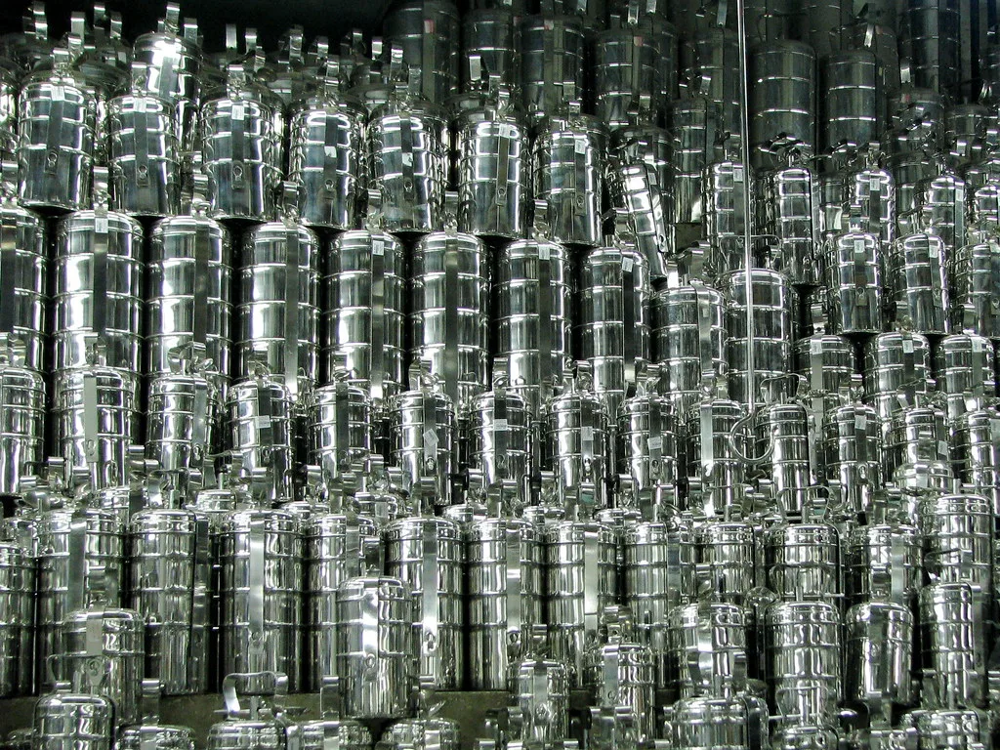

Old Clothes Buyers in Chennai
Having a bunch of old clothes at your home? You can sell those now! Get the best prices for your old and used clothes in Chennai. Sell your old T-shirts, Shirts, Jeans & Pants, Sarees, and Chudidars from your place itself. Just give us One Call & We provide free door pickup.

Second Hand Cloth Buyers in Chennai
If you are searching for old clothes buyers near me, The best option to sell your used dresses is OM Sairam Pattu Center. We know your clothes' worth and the emotion behind them, So don't make your clothes garbage instead sell them to us and make money with them. Recycle clothes and make dresses affordable for someone today!
How to sell Used Clothes in Chennai
Pack Your Old Clothes
Get your old/used clothes packed, Only clothes in good condition are accepted so pack it accordingly.
Call Us Now
After Packing, Call us on +918608008343 or WhatsApp us on the same number with your location.
Free Door Pickup
We will come and collect your packing at your doorstep within 12 Hours of calling. The pickup is 100% Free & Quick!
Get Cash in Hand
We always give spot cash for your dresses right in your hands itself, We assure you the best price for used clothes in Chennai.

Get Silver & Plastic Utensils for old clothes exchange
Not only limited to cash, but we can also provide new silver & Plastic utensils in the same worth of second-hand clothes you gave for exchange. Why waiting still? Contact us and sell your old dresses. If you plan to buy some useful things for your lovely house, This could be a better chance of exchanging your used and old clothes. OM Sairam Pattu center is the best place for old cloth exchange in Chennai.
Request a Call Back
Fill in your details and our team will call you shortly.
We've received your request and will call you shortly to arrange pickup.
Do not worry about your information, All information recorded through this site is only for our communication purpose. Take the first step to start recycling from your home. An average person nearly buys 20-30 clothes a year and some clothes only last for a year, So the best way to manage the old clothes is by selling them for a reasonable price.
Customer Reviews - "Best Old Clothes Buyers in Chennai"
"I was searching for old clothes buyers near me on Google for the past two weeks but many seems to be not okay, But OM Sairam used cloth buyers were the honest person to get my second-hand clothes for exchange of money, They were quick to pick up my dresses within 3 hours from the call. Thanks to them!"
"Cleaning my house was always part of my Sunday work, But disposing of the old clothes was the big task in this. I came to know about some second-hand cloth buyers in Chennai and called Mr.Raji for pickup. They were very kind and gave the best price. They are the best old clothes buyers in Chennai and surroundings."
"I was planning to gift a saree to my mother on her birthday, But not had enough money to buy it. I decided to sell some of my old clothes which size is not fit to me now. OM Sairam Old cloth buyers gave me best price for the used dresses and I also gifted my Mom with a saree & she is also happy with it. Thank you."

Donate Clothes in Chennai
If you are not willing to sell your old clothes for money, You can also donate them to us. We will assure that it reaches some poor people at an affordable price. You can also donate old sarees, pants & shirts and ladies' wear if it's in good condition. The pickup of clothes will be always free from our side.
Old Clothes Buyers in Chennai
We accept all types of old and used clothes from customers, Though Men's Pants and Shirts and ladies' sarees can go for a good price compared to other clothes, without losing its value by selling it at the right price to the best old pattu saree buyers in Chennai – Om Sairam Pattu Center.
No difficult procedures, Just give us a call at +91 86080 08343 or WhatsApp us at the same number we will arrive for the pickup.
Generally, torn clothes are not accepted, Only clothes in good condition but used are accepted. Do not worry sometimes it's accepted please do contact us for more information.
Yes, We do have a physical store for old clothes buying at Mogappair, Chennai. You can directly visit our shop and sell your old clothes also. Contact us for the shop address. We got positive feedback from our direct customers as the good old clothes buyers in Chennai.
Yes, We accept clothes from any location. We also give a good price for old clothes from these non-profit places.
Some clothes are gold, If you are looking to sell your old pattu sarees take a look at our old pattu saree buyers' site. We accept all types of pattu sarees under any conditions.